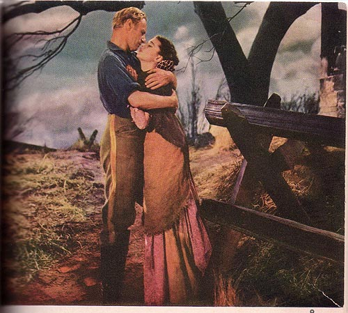

Illustration for Gone with the Wind: Motion Picture Edition
(New York: The Macmillan Company, 1940)
CAPTION: "Ashley came to her swiftly and in a moment had her in his arms. The bitter years since then fell away and he saw that the lips turned up to his were trembling--and he kissed her. (See page 200)"